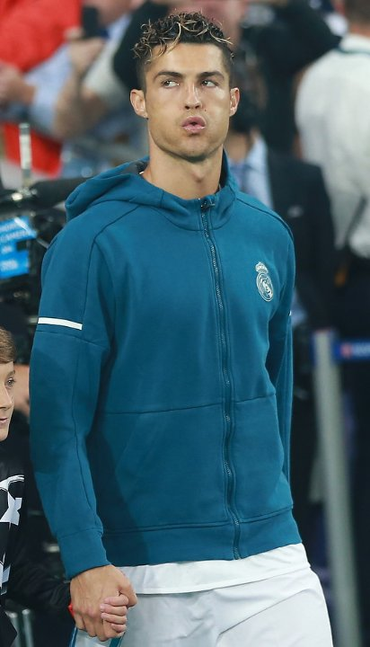

The 'Last-16' Era — Stuck in the Champions League R16
The origin of 'Mr Last-16': In Ronaldo's early Real years, the 'Galácticos' went out at the Champions League round of 16 for several seasons running, drawing the Chinese fan nickname 'Mr Last-16 of the UCL'. The moniker followed him like a shadow — a humiliating tag Real and Ronaldo could not shake in those early years.
The 2010 Lyon pain: In the 2009/10 Champions League round of 16, Real were knocked out 2-1 on aggregate by French side Lyon. Ronaldo opened the scoring in the 6th minute of the second leg but could not turn the tie. A squad assembled at vast expense had failed to escape the round of 16 for six straight years — a joke of the century.
Personal stats versus collective failure: Ironically, Ronaldo's personal scoring numbers remained dazzling, but Real's collective Champions League record was atrocious. One man scoring, the whole team going out — that individual-collective tear was the central awkwardness of the 'Mr Last-16' era.
The 'Real Madrid black hole' doubt: Media and fans began to ask: had the mega transfer fees and galáctico policy failed? Or was Ronaldo incapable of stepping up in the UCL's biggest games? The 'Real Madrid black hole' narrative swelled, and as the poster boy Ronaldo naturally bore the brunt.
Mourinho breaks the curse: Only with Mourinho's arrival in 2010 did Real escape the round-of-16 curse in 2011/12 and reach three straight UCL semi-finals. But ironically, the breakthrough was credited more to Mourinho's tactical revolution than to Ronaldo alone.
From Mr Last-16 to UCL King: To be sure, later Ronaldo washed away this disgrace with four Champions League titles. But the lesson of the 'Mr Last-16' years is profound — however great an individual is, without the collective it's all talk. It is also a reminder that Ronaldo's 'UCL King' myth was not true from day one.